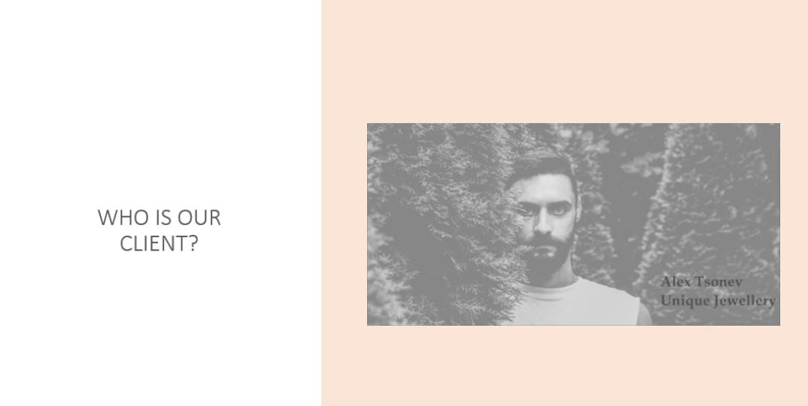
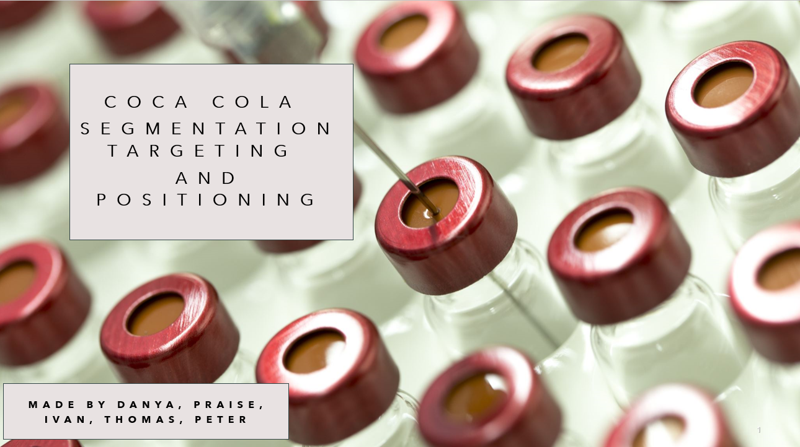
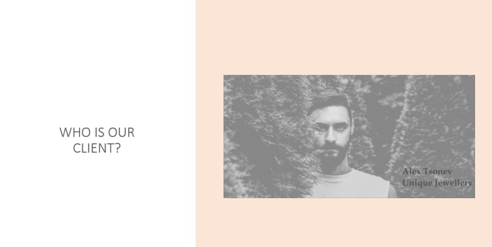
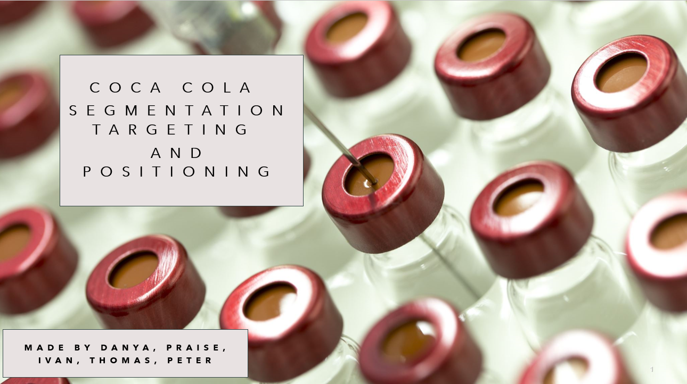

Professional Skills
 



Prototype Testing
During the study we had several presentations on different topics. One of them was about Coca Cola position on the market where we made a presentation and were presenting it with
the whole group. Then we had a presentation about our progress on the Project so far. Since last time teachers said to us that we shouldn't present with the whole group we decided
that I will be presenting for Sprint 1. After that I also made my own presentation on UX and Psychology. We also made a pecha kucha presentation where we described our prototype to our
client which he liked in the end. In the end we are also going to have our final presentation which we did not prepared fully yet but already has some pictures.
Presentations relates to the Learning Outcome Communication because I was presenting in most of them and was the one who applied to present which shows my initiative.